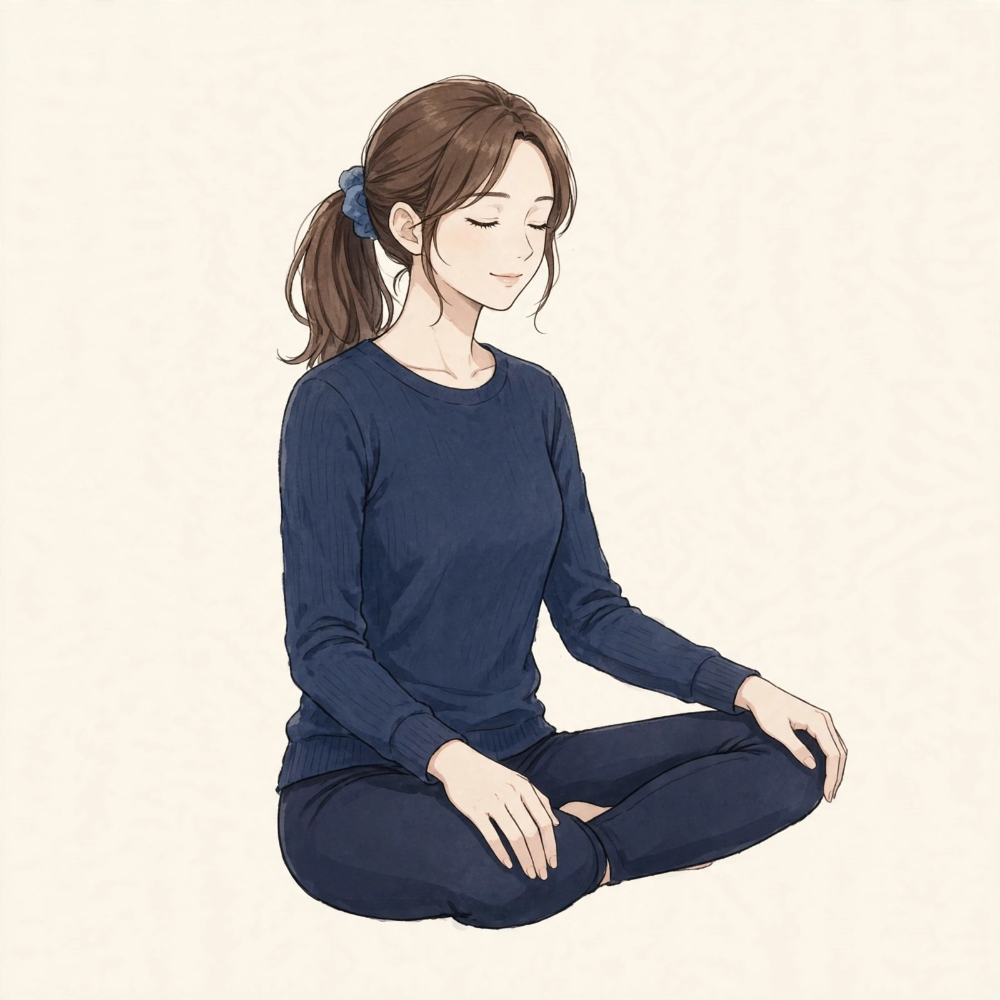

交感神経と副交感神経のバランスが、眠りやだるさにどう関係するかを解説します
自律神経は、体の「活動モード」と「休息モード」を自動で切り替える仕組みです。切り替えがうまくいかないと、眠りの浅さやだるさ、こりの取れにくさとして現れます。
「疲れているのに眠れない」「休んだはずなのに体が重い」。こうした感覚の背景には、自律神経の切り替えの乱れが関係していることがあります。このページでは、自律神経の基本と、乱れやすい生活習慣、整える方向のポイントを解説します。
| 交感神経（活動モード） | 副交感神経（休息モード） | |
|---|---|---|
| 働く場面 | 日中の活動・緊張・集中 | 休息・睡眠・食後 |
| 体の状態 | 心拍が上がる、筋肉が緊張する | 心拍が落ち着く、消化が進む |
| 血管 | 収縮しやすい | ゆるみ、巡りが進む |
健康な状態では、この2つが1日のリズムに合わせて入れ替わります。朝に活動モードへ上がり、夜に向けて休息モードへ下がっていく。この波が崩れ、夜になっても活動モードが下がりきらないと、眠りの浅さにつながります。逆に日中も休息モードから抜けられないと、だるさややる気の出なさとして感じられます。
見逃されやすいのが、体の緊張との関係です。肩や首の筋肉が張り続けていると、体は「活動中」の信号を受け取り続けます。姿勢やこりのケアが、結果として休息モードへの切り替えを助けることがあるのは、このつながりのためです。
自律神経の多くは自動で働きますが、呼吸は例外的に、自分でペースを変えられます。ゆっくり吐く呼吸は休息モードを高める方向に働くとされ、眠る前の習慣として取り入れやすい方法です（図1）。吸う時間より吐く時間を長くするイメージで、数分続けるだけでも体の緊張がほどけやすくなります。

図1：目を閉じてゆっくり呼吸する時間は、休息モードへの切り替えを助けます。当サロンでは施術中も呼吸のペースを大切にしています。
当サロンの施術では、静かな個室で体の緊張をほどきながら、呼吸が自然に深くなる流れを大切にしています。施術後に「眠くなった」「体が温かい」と感じる方は多く、これは休息モードへの切り替えが進んだサインの一つです。
自律神経の切り替えは、1日の中で波のように動いています。朝の光を浴びると活動モードが立ち上がり、日中の活動でピークを迎え、夕方から夜にかけて休息モードへ移っていきます。この波の落差が大きいほど、眠りは深くなりやすいとされます。
現代の生活は、この波を平らにしがちです。日中は屋内で座り続け（活動モードが上がりきらない）、夜は画面の光と情報で頭が働き続ける（休息モードへ下がりきらない）。結果として「疲れているのに眠れない」「休んでも回復しない」という状態が起こります。整える方向は、薬ではなく生活の波を取り戻すことです。
眠りに入るには、体の深部の体温が下がり始めることと、休息モードが優位になることが重なる必要があります。入浴で一度体温を上げると、その後の下がり幅が大きくなり、眠りに入りやすくなります。就寝の1〜2時間前の入浴が勧められるのはこのためです。
逆に、眠る直前まで肩や首が張り、頭が働いている状態では、体は活動モードのままです。施術で体の緊張をほどくこと、呼吸をゆっくりにすること、光を落とすことは、どれも同じ「下げる方向」への働きかけです。
呼吸の深さは、姿勢に左右されます。猫背で胸が閉じた姿勢では、肺が広がるスペースが狭くなり、呼吸は浅く速くなりがちです。浅く速い呼吸は活動モードの信号として体に伝わり、緊張が抜けにくい状態を作ります。逆に、胸が開いて背筋が伸びた姿勢では、ゆっくり深い呼吸がしやすくなります。
姿勢のケアと自律神経のケアがつながると言われる理由の一つが、この呼吸の経路です。施術で胸まわりと背中の緊張をほどくと「呼吸がしやすい」と感じる方が多いのは、姿勢が変わって呼吸のスペースが広がるためです。
東洋医学では、体の中を気・血・水が巡ることで調子が保たれると考えます。巡りが滞ると、重さやだるさ、冷えとして感じられ、休息しても回復しにくくなります。自律神経の切り替えの話と、表現は違っても、指している方向は近いものがあります。
鍼灸師としての知識も活かし、当サロンでは現代的な仕組みの説明と、東洋医学的な体の見方の両方から、その方の状態に合うケアを組み立てています。どちらか一方の考え方に寄せるのではなく、体感として納得できる説明を心がけています。
切り替えの乱れは、さまざまな形で現れます。眠りの浅さ、朝のだるさ、頭の重さ、肩や首の張りの取れにくさ、食欲の波、手足の冷え、理由のない焦燥感。これらは別々の不調のようでいて、「活動と休息の切り替え」という一つの仕組みの乱れとしてつながっていることがあります。
不調を一つずつ追いかけるのではなく、切り替えの土台（睡眠、活動量、緊張のほどき方）を整える視点を持つと、ケアの優先順位が整理できます。当サロンの施術は、その土台の一つである「体の緊張をほどく」部分を担います。
女性の場合、自律神経の状態は女性ホルモンの波とも関係します。月経前や更年期には、ホルモンの変化が自律神経の働きに影響し、眠りの浅さやほてり、気分の波として現れることがあります（詳しくは専門解説「女性ホルモンと年代別の体の変化」で解説しています）。
周期や年代による波を「自分の弱さ」と捉える必要はありません。波がある時期はケアを厚くする、という付き合い方が、無理なく続けるコツです。
当サロンでは、完全個室で、施術中の会話の量もその方に合わせています。静かに休みたい方には無理に話しかけず、体の緊張がほどける環境を整えます。アロマの香りは、好みを確認しながら選びます。香りは嗅覚を通じて感情や記憶に直接届く感覚で、休息のスイッチとして働くことがあります。こうした環境面の積み重ねも、切り替えを助けるケアの一部です。
自律神経の切り替えは、季節の変わり目にも影響されます。気温と気圧の変化が大きい時期は、体が環境への適応にエネルギーを使い、だるさや眠りの浅さを感じる方が増えます。「季節の変わり目はいつも調子が崩れる」という感覚は、気のせいではなく、切り替えの負担として説明できます。
この時期は、新しいことを始めるより、睡眠と食事のリズムを守り、体の緊張をこまめにほどくことが土台になります。当サロンでも、季節の変わり目には体調の変化をうかがいながら進め方を調整しています。
コーヒーなどのカフェインは活動モードを強める方向に働きます。午後の遅い時間のカフェインは、夜の休息モードへの切り替えを遅らせることがあります。また、アルコールは眠りに入りやすくする一方で、眠りの後半を浅くすることが知られています。「寝酒でよく眠れる」という感覚と、実際の回復感が食い違うのはこのためです。どちらもやめなければならないものではありませんが、眠りの浅さが気になる時期は、量と時間を見直す価値があります。
Q. 自律神経の乱れは検査で分かりますか？
A. 医療機関では問診や専用の測定で状態を確認することがあります。このページの内容は一般的な仕組みの解説であり、診断に代わるものではありません。気になる症状が続く場合は医療機関への相談をおすすめします。
Q. 施術で自律神経は整いますか？
A. 施術そのものが自律神経に直接働くというより、体の緊張がほどけることで休息モードへ切り替わりやすい状態を作る、という考え方です。生活リズムの見直しと組み合わせることが大切です。
Q. 夜に眠れないときはどうすればいいですか？
A. 就寝前の光と刺激を減らす、ゆっくり吐く呼吸を取り入れる、体を温めてから布団に入るなどが手がかりになります。眠れない状態が長く続く場合は、医療機関への相談をおすすめします。
Q. 朝のだるさも関係ありますか？
A. 夜の休息モードへの切り替えが不十分だと、睡眠の質が下がり、朝のだるさとして残ることがあります。眠りの深さと自律神経のリズムはつながっています。
解説と施術は、施術歴30年・鍼灸師の資格を持つ平賀建人が担当します。登録販売者・アロマセラピスト・パーソナルトレーナーの知識も活かし、体の仕組みをできるだけ分かりやすくお伝えすることを心がけています。
この記事は専門解説シリーズの1本です。料金やご予約についてはトップページをご覧ください。